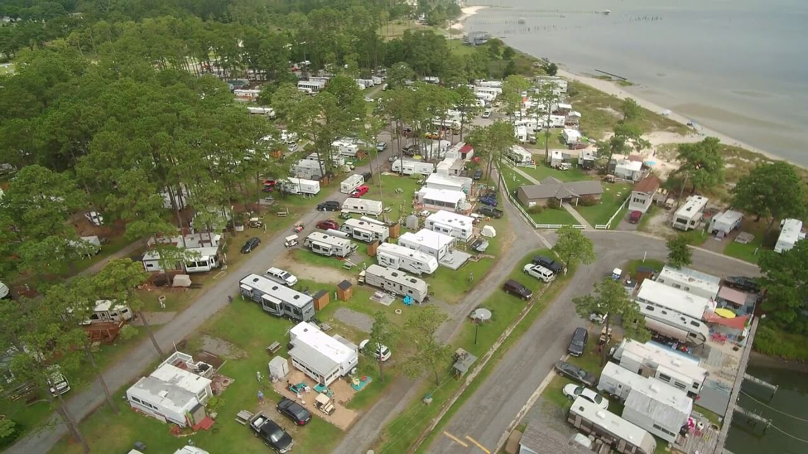
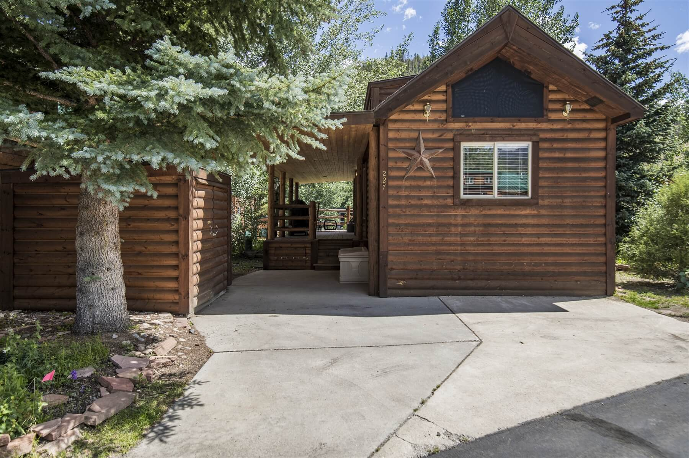
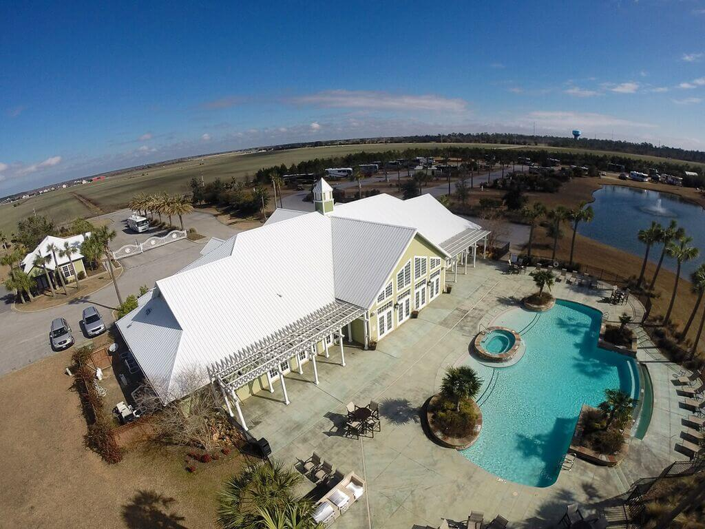

25 Best Luxury RV Resorts
The reason why we at times buy a Recreational Vehicle is so that we can pack up at any time and head to a luxury rv resort. If you own a luxury Recreational Vehicle then that makes everything even more enjoyable. Below is a list of 25 luxury rv resorts spread out across the entire united states.
1. Flying flags rv resort
Location 180 Avenue Of The Flags Buellton, CA 93427.

If you want one of the best experiences possible while at a luxury rv resort, then look no further than the flying flags
rv resort. It is located in Buellton which is a small
city in Santa Barbara County, California, United States. You have the option of unwinding in one of the many accommodations offered
which include cottages, luxury tents, airstream rentals, vintage trailers or perhaps your own trailer or Recreational vehicle.
If you know about Santa Barbara then you would know that it is along the central coast and the Flying Flags rv resort offers many amenities to accompany the great atmosphere. These amenities include a resort playground which is great if you have kids, a swimming pool and free wifi is also offered.
There are many other attractions around the resort which just makes this experience even more enjoyable. There is wine tasting at the local winery and more than enough places to explore in the neighboring surroundings of Los Padres National Forest and Lake Cachuma.
Make Flying flags rv resort your destination if you are in the market for some great relaxation or you have exploration on your mind.
2. Hilton Head Island Motorcoach Resort
Location Hilton Head, SC.
This resort sits on 50 acres of land and is so beautiful it makes every single second you stay here worth it. It is surrounded by live oaks dripping with Spanish moss. It is also surrounded by ferns, palms and flowering shrubs. This is the place to be if you are looking for comfort and adventure.
There are many options to fit your schedule. You can either rent by the night, weekly or monthly.
Some amenities include:
Recreational Facilities include:
Things to remember includes the site not allowing class B Motorhomes, pets are more than welcome and there are no tents.
3. Polson Motorcoach & RV Resort
Location 200 Irvine Flats Road, Polson, MT 59860.

This resort was opened in 2008 and has consistently been among the top rated motorcoach parks in America. With that being said, it might be the best time to state the fact that it has also been the number 1 rated motorcoach in Montana. This motorcoach resort gets top ratings from the likes of Trailer Life and by Woodall's.
Some amenities include:- Wide Paved Roads
- Woodall’s Rating 5/5
- Exclusive Class A Accommodations in a Luxury Motorcoach Resort Setting
- Fenced Dog Run
- Common Areas With Expansive Views and Gas Fire Pits
- Shower and Laundry Facilities With Granite Countertops and More
- Trailer Life Rating 10/10*/10
- Professionally Designed to Maximize Glorious Views of Lush Landscapes
- Brand-New Facilities and Amenities, Including Equipped Commercial Gym
- Oversized Lots, Typically 46′ x 75′, 200 amp Elec, WiFi
- Extensive Lot Upgrade Options of Dining/Living Areas, Outdoor Kitchen, Gas Fire Pit, and More
4. Petoskey RV Sites
Location 27777 Franklin Southfield, MI 48034.
This resort sits on 26 acres of beautiful land. This makes it very spacious and with that it offers fully furnished vacation rentals. You will find many activities to keep you and the family busy a;ll day long. Available activities include but not limited to: swimming pool and spa, putting green (for golf putting practice) and a great tennis court to practice that backhand.
You won't have to stay on the resort to have fun as there are many other activities you can part-take in around the resort. There are many other places close by where you can go fishing, hiking, and golfing just a couple minutes drive away from the resort. So pack your bags and head to Petoskey Rv Resort.
Some amenities include:- Controlled Access
- WiFi Access
- Cable TV Access
- Recycling Available
- Restroom & Shower Facilities
- Laundry Facilities ($)
- On-Site Store ($)
- Campfires Permitted
- Firewood for Sale ($)
- Pet Friendly
- Clubhouse
- Swimming Pool
- Hot Tub
- Pickleball
- Tennis
- Fitness Center
- Game Room
- Library
5. New Point RV Resort
Location 846 Sand Bank Rd., New Point, VA 23125.
Located near my hometown of Virginia Beach. You will not be disappointed with what this rv resort has to offer. You will have the option of relaxing at the on-site beach or if you would rather taking a dip in their sparkling pool, take part in all the community activities or try to beat your neighbors in a quick game of horseshoe.
If you want, you can also rent a paddle boat. This and many more activities awaits you.
Some amenities include:
- Covered Pavillon
- Theme Park Area
- WiFi Access
- Restroom & Shower Facilities
- Laundry Facilities ($)
- On-Site Store ($)
- Campfires Permitted
- Firewood for Sale ($)
- Ice ($)
- Propane ($)
- On-Site Food Service ($)
- Pet Friendly
- Covered Pavilion
- Picnic Area
- Swimming Pool
- Beach Access
- Boating
- Marina
- Boat Ramp
- Fishing
- Playground
- Basketball
- Horseshoes
- Volleyball
- Cornhole
- Golf Cart Rentals ($)
- Pedal Go Kart Rentals ($)
- Kayaking
- Kayak Rentals ($)
- Hiking
- Game Room
- Library
- Beaches
- Coastal Region
6. Tiger Run Resort
Location 85 Revett Drive Breckenridge, Colorado 80424.
 Some amenities include:
- Pool
- Hot Tubs
- Pavilion
- Fitness Centre
- Game Room
- Tennis Courts
- Sand Volleyball/li>
- BasketBall
- Play Area
- Fishing and Hiking
- Firepit
- Laundry and Showers
7. Bella Terra Of Gulf Shores RV Resort
Location Foley, Alabama.
The Bella Terra of Gulf Shores RV Resort is only a few minutes away from the Intracoastal Waterway. There are more than 10 marinas in the Gulf Shores area. I brought that up because the activities manager at Bella Terra Of Gulf Shores RV Resort will arrange discounts on charter fishing boats to ensure you return. There is also the option of driving 20 minutes southeast to get on board the Southern Rose cruise ship for daily dolphin watching and dining.
There are nine championship-caliber golf courses in the Gulf Shores area and the Activities Director will gladly arrange discounts and tee-times for you. Also nothing will be stopping you from taking a break in the pool that always look well maintained.
If you are in the mood for shopping, then there is this place called the Wharf where there are 57 stores that offer a wide variety of merchandise and services, from the locally owned swimwear shop H2O to family favorite Build-ABear Workshop. If you want the feeling of being in Las Vegas, then just a short trip away from the Bella Terra Of Gulf Shores RV Resort is Biloxi, Mississippi - home to some of the biggest casinos in the south. You can have a tour of all the casinos arranged with the activities manager.
It's not hard to make Bella Terra Of Gulf Shores RV Resort your next choice for a getaway.
Some amenities include:
- Oversized RV lots for sale or rent (some lots as large as 4500 sq ft)
- Fenced-in Dog Parks with ample space for your furry friends to run freely
- Open-space landscaped with lush foliage
- Zero-entry, infinity-edge pool
- Jacuzzi & dry sauna
- Center Piece Lake – fully stocked for fishing
- Expansive lake views seen from throughout the resort
- Grand Clubhouse (6,000 sq ft) with outdoor fire pit BBQ
- Private movie theater that comfortably seats 14
- Numerous championship-caliber golf courses in the immediate area
- Daily programmed activities events
- Concierge Services
- On-site laundry facilities
- Business center
- Free Wifi internet access
- Easy interstate access
- 200 amps per lot. 120 amps reserved for each lot's amenities
- Fully-appointed fitness center
- Putting green
- Private bath houses with all inclusive shower suites and restrooms
8. Desert Shores Luxury Motorcoach RV Resort
Location 48170 Hjorth St. Indio, CA 92201.
Come to The Desert Shores Luxury Motorcoach RV Resort if you want one of the highest standards in luxury. Located in Palm Springs/Indio area of Southern California, the seasonal months offer near-perfect weather includes 300 days of sunshine. There are many activities to get involved in like golfing, tennis, dining, shopping, concerts, concerts, musicals, or just basking in the sun. No matter what you like, there will be something for you.
You also have the choice of taking part in dinners, dances, exercise classes, poker, women's luncheons, cocktail parties, hiking, biking, jeeping, and more.
9. Newport Dunes Waterfront Resort and Marina
Location Foley, Alabama.

Choosing a great rv resort should be easy after seeing all these options and the Newport Dunes Waterfront Resort and Marina will definitely be on your top ten list of rv resorts to visit.
There are 372 Newport Beach Campsites which gives you the option between many different RVs, travel trailer, and camping. Campsites are available on the beachfront or get cozy in one of their studio campsites. Make this your destination with its unrivaled features and activities which are of great enjoyment and some relaxation if need be.
Some amenities include:
- Swimming Pools and Whirlpool Spa
- Marina and Boat Launch
- Year-Round Recreational Activities for All Ages
- Market and Watersports Rentals
- Beach and Waveless Swimming Lagoon
- On-Site Waterfront Dining at the Back Bay Bistro
10. Naples Motorcoach Resort & Boat Club
Location Naples, Florida.

If you are looking for a rv resort where you can have an easy night out dancing, then the Naples Motorcoach Resort & Boat Club is the place to be. It has a beautiful ballroom where you can showoff your moves. If you prefer the sunshine and beach then this rv resort has you covered also. You can kickback and relax on its private beach while sipping on something sweet or chewing something that has been well done.
Who said you couldn't get in shape wile on an rv resort? there is fully equipped fitness facility which will keep you busy for as long as you want. So, there are many reasons to make Naples Motorcoach Resort & Boat Club your next destination.
Some amenities include:
- Ballroom with dance floor, bar and warming station
- Gated Entrance
- Fitness center
- Men’s and women’s locker rooms with saunas
- Private Theater
- Two card rooms
- Billiards room
- Warming kitchen
- Guestbook exchange library
- Large infinity pool, spa and sundeck area
- Two additional free-form pools and additional outdoor spas
- Outdoor pickleball courts
- Dog park
- Two bathhouses with laundry facilities
- Wi-Fi
- 32 dry boat storage sites
- Boat ramp and dock
- Direct canal access to the Gulf of Mexico
11. Pechanga RV Resort
Location 45000 Pechanga Pkwy, Temecula, CA 92592.
This resort is coupled with a casino so it is fit for people who likes to take risks. Pets are welcome and that means you will most likely be able to meet other people with playmates for your pets.
Some amenities include:
- Spacious Sites
- Wireless internet access at each site
- Fitness center
- Near the Pechanga gas station
- 210 full-service sites
- 112 Deluxe back-in sites
- Horseshoe Pits
- Cable Tv
- Car Wash
- Fenced dog walk and entertainment area
- Clean Restrooms
- Book exchange
- 20-30-50 amp power
12. Colorado Bend State Park
Location P. O. Box 118 Bend, TX 76824.

The Colorado Bend State park is one of those places that is hard to resist. There are so many different activities to keep you entertained. This place gives you a feeling you won't find anywhere else.
Colorado Bend State Park Activities
You will have the option of going fishing with your family or with your pals or take a cave tour. Why not test your stamina by going on the long 35 mile hike and bike trails. After you have done all of that, next you can cool off in the Spicewood Springs.
Camping
You can choose from options like walk-in tents, primitive hike-in sites or drive-up sites. You will be unfortunately out of luck if you choose the drive-up and hike-in sites areas because they do not have any hookups. They do have water though. The site offers special prices if you reserve one of their group camps beforehand.
Volunteer
You have the option of the great option of being a volunteer for the park by helping out with events, or helping with maintenance. You can also help with protecting the natural areas of the park.
Gorman Falls Hike
Why not take yourself on a self-guided tour by going through the 70-foot spring-fed waterfall. Make sure you get some exercise in first though as it will be a 3-mile round trip which is on rocky terrain.
13. Camp Gulp
Location Camp Gulf 10005 Emerald Coast Parkway Miramar Beach, FL 32550
Located in the Northwest of Florida, you will find many beautiful beaches, boating, shopping, dining, golf and a lot more. You will not regret staying here as you are mere steps away from the beach. Good Sam has also given this resort a rating of 10-10.9. That being said, there are lots of luxury cabins available for families that do not have an rv. Staying at any of these cabins will be just walking distance from the waters of the Gulf. You will enjoy a loft area, a bath and a full kitchen.
Beach houses are also available and will sleep up to six. These too are very close to the beaches.
14. Mountain Views RV Resort
Location 539 Airport Rd. PO Box 680 Creede, CO 81130
Located in the town of Creede which is a little bit less than 5 hours away from Denver. This resort has many activities such as horseback riding, festivals, ATVs, rafting, theater, Railroads & Scenic Trains, Museums & Historic Sites, RV Rallies and fishing.
Amenities:- Bear Lodge – Pool table, cable TV, game tables – No Pets
- Elk Lodge – Pool table, cable TV, table tennis, game tables.
- BBQ area with outdoor dining accommodations
- Clean Historic Rental Cabins
- Accommodate largest rigs
- Free WiFi / DSL Internet for Park Guests
- Extra wide roads & large spaces
- All sites are level and easily acce>
- Commercial Grade Laundry (20 washers/24 dryers)
- Private showers, spotless restrooms
- Picnic table at each rental site
15. Mountain Lake Stream Realty, LLC
Location 4312 NC-107, Glenville, NC 28736
This resort is located in the Lake Toxaway area of Western North Carolina. You will not be disappointed if you bring your oversized motorcoach to this resort because they are equipped to handle rvs of all sizes and have full hookups and optional enhancements of patios. You will be pleased if you are into waterfalls, streams, lakes and scenic mountains. This resort has them all.
Mountain Lake Stream Realty sits at over 3200 ft of elevation and is perfect for the spring season which brings outdoors to life with all the beautiful wildlife and fauna that resides there.
Amenities:- Private Clubhouse Lodge
- Laundry Facilities
- Catering Kitchen
- State of the Art Fitness Facility
- Two Pools and Bath Houses
- Hot Spa
- Tennis
- Pickleball
- Bocce Ball
- Active Social Committee
- On-site Rental Program
- Organized Outdoor Pursuits
- Hospitality Services
- Panoramic Mountain Views
- Executive 9-Hole, Par 3 Golf Course
Clubhouse area plan
16. Bluewater Key Rv Resort
Location 2950 Overseas Highway Key West, Florida, 33040
The Bluewater Key Rv Resort is located in Florida Keys which is known for its all year round perfect weather. If you fo not know what the Florida Keys is, then, the Florida Keys is where the Gulf Of Mexico meets the Atlantic Ocean. This meetup between these two water bodies provide crystal clear water where you will enjoy either fishing, boating, diving, snorkeling and many other types of activities. For the rvers that also love to golf, you can play a few rounds of gold or visit the Shipwreck museum. Daytime isn't the only time you can enjoy fun activities because the night comes alive as soon as the sun sets.
With all the fun that comes with the Florida Keys, it is the perfect area to bring your rv when it is paired with the Bluewater Key Rv Resort.
Amenities:- Large private lots with tiki huts and lush landscaping
- Large laundry facility
- Temperature controlled fresh-water pool
- People Park
- Dog Park
- Clubhouse
- Public showers and restrooms
- High Speed Wi-Fi throughout the resort
- HD Cable
- Full hook-ups with 30 & 50 amp service
- Storage facility for a fee
- Private docks on Canal and Bay Front Lots
- Community Dock w/ boat slips for rent during summer season only
- Boat launch for shallow draft boats (12 to 18 inches)
- Curbside trash pick-up & recycling
- Ice for purchase
- Close to Baby’s Coffee and Bay Point Market
- Water-Sports & Boat Rentals
- Jeep Rentals & More
- Fishing Charters
- Snorkeling & Dive Trips
- Key West Attractions
- Day Trips – Upper Keys
- Dining
- Sunset Celebration
- Nightlife
17. The Springs at Borrego
Location 2255 DiGiorgio Road, Borrego Springs, CA 92004
The Springs at Borrego is like an oasis in the desert and is family owned. It provides great rv sites and amenities that will not disappoint. If you are into golfing then it would be nice to know that 9-hole golf course. This golf course has a total of 3084 yard, 36 par, 111 slope rating and a course rating of 33.9. This course comes with extra features such as a separate chipping area that has two bunkers and also a putting green. This is great for visitors who just want to work on either their long or short game.
Amenities:
- Pickleball games
- A range of social activities including campfire Tuesdays, wine socials and star parties
- Spacious RV sites with a view of the mountains
- Secure and affordable RV storage (both short term and long term)
- Hot Mineral baths
- An astronomy park for the stargazers
- A dog park
- Access to the Anza-Borrego Desert State Park
- A tennis court
- A swimming pool and a wellness center
18. Solstice Motorcoach Resort & Country Club
Location 345 Mystic Drive Mesquite, NV 89034
This luxury motorcoach resort provides top class amenities and one of the best destinations for motorcoach owners. Located between great scenery of Southern Utah and the very high and fast life of Las Vegas, this location will be great for anyone who is looking for adventure and excitement. You will have the option of staying at the local casinos or taking a short trip to the busy Las Vegas strip where everyone in this world need to experience at least once in there lifetime. This Resort is a great place tp sit back and just enjoy life.
Make Solstice Motorcoach Resort & Country Club your destination if you want to see beautiful mountain views, community pet parks, decorative three tier pond, remarkable clubhouse and walking trails.
Amenities:
- Fitness Facilities
- Table Tennis
- Pool table
- Game Room
- Free Wifi
- Lounge Areas
19. Normandy Farms Family Camping Resort
Location 72 West Street, Foxboro, MA 02035
The Normandy Farms Family Camping Resort has been around since 1971 and is deep in the woods between Cape cod and Boston. This resort has been recognized as one of the premier resorts in the world. You have the option of relaxing in the unique weather of New England in your tent, rv, or you have the option of staying in one of the deluxe cabins or YURT rentals.
Amenities:
- Recreation Lodge
- Creative Arts Center
- Swimming
- Business & Information Center
- Fitness Center
- Bike Park
- Disc Golf
- Tennis
- Playgrounds
- Recreation Facilities
- Dog Park
20. Ozarks RV Resort on Table Rock Lake
Location 1229 Co Rd 663, Oak Grove, AR 72660
The Ozarks RV Resort is just 30 minutes away from Branson. The abundance of activities that this rv resort offers may persuade you to not even leave to visit anywhere close by. If you do decide to explore outside the resort, there are amusement parks, museums and live music entertainment not too far away. You will have the option of using its swimming pool or hot tub, tennis courts, bath house, golfing and laundry facility among many others. Sit back and relax and just enjoy the peaceful environment. Visit the Ozarks RV Resort.
Amenities:- Hot tub and swimming pool
- Lighted Tennis courts
- Lighted Pickle Ball courts
- Nine-hole Par 3 Golf course on the lake shoreline
- Bath house
- Laundry facility
- Fenced off leash area for dogs to play
- Trailer storage for your boat or car haulers
- Golf Cart Rental (in season)
- Full service marina close by with boat, tube, ski rentals and fishing gear
21. Tropical Trails RV Resort
Location 3605 FM 511 Brownsville, TX 78526
The Tropical Trails RV Resort was open recently in January 2020 and offers many activities and amenities to keep everyone having fun. It sits on over 185 acres of land in Brownsville, TX. It is conveniently located in the Rio Grande Valley and is only a short drive away from many different happenings in South Padre Island and Brownsville. The Tropical Trails RV was designed with everyone in mind so it will cater for all ages from kids to seniors.
Amenities:- Shuffleboard
- Resort-style swimming pool and hot tub
- Gated entrance for security
- Pickleball court
- Serene 10-acre lake
- Zumba and water aerobics classes
- Free high speed fiber optic internet at each site
- Bike and walking trails in tropical
- Ping pong table
- 2 outdoor pavilions with BBQ pits
- Fitness rooms
- Library with book exchange
- Business center
- 3 bathhouses that include restrooms and showers
- Pet park
- 3 laundry facilities
22. Odetah Camping Resort
Location 38 Bozrah St Ext #1300, Bozrah, CT 06334
This rv resort is perfect for anyone who wants to go kayaking and fishing. They offer breakfast at their little restaurant on the lake and that is always fun to experience. Casinos are not far away from this rv resort and a good advise to anyone coming here to experience their casinos is to not bring all your money there at once. The games in these casinos are known to be way more addicting than your regular casinos.
This campground is located on a hill and it would be wise to bring shoes that you are comfortable walking in. There is also a pond in which you can bring your floating tube for. Amenities:- Pull-thru Sites
- Pets Allowed
- Electric 50 AMP
- Electric 30/20/15 Amp
- Restrooms
- Tent Camping
- Showers
- Pool
23. Henderson Beach State Park
Location 17000 Emearaid Coast Pkwy, Destin, FL 32541.
The Henderson Beach State Park gives you a perfect view of the Gulf of Mexico and is always a good spot to bring the whole family. This resort has over 6000 feet of beautiful shoreline. This long shoreline has boardwalks, pavilions which you can use picnicking. There is also a playground for all the kids or just the kids at heart. Bring your pets with you along the pet-friendly trail while your rv sits in one of the 60 different campsites to choose from. These campsites offer electricity hookups and water and also air-conditioned and heated bathhouses. Camping fees at this resort is at $30 per night. You have the option of making your reservation with this resort up to 11 months in advanced.
For all the people who have bad luck fishing, this location is known to have as the luckiest fishing village in the world. There are many different species of fish here such as: red fish, pompano, flounder, whiting, catfish and at times cobia.
Amenities:- Heated/Air conditions restrooms
- Showers
- Coin operated washers
- Dryers
- Vending Machines
- Pets welcome
24. Desert Shadows RV Resort
Location 19203 N. 29th Avenue Phoenix, AZ 85027 .
This rv resort is located just off I-17 in North Phoenix. This rv resort has 638 spaces and is perfect for a getaway. If you want just a simple campsite then you will be comfortable here. But if you want al;l the luxuries of the best rv resort then this is also the place to be. There are full water and sewage hookups, wifi, indoor heated pool and many more amenities to keep you comfortable. There are also many activities to take part in within the local golf courses, restaurants and shopping malls. Drivers with 75 foot long rvs will also be comfortable staying here as this resort has wide back in rv spaces.
Amenities:- Free Coffee, Tea and Ice in Lobby
- Computer Room and Free Wi-Fi in Lobby
- Large Lots
- Spacious clubhouses
- Water and sewer hook-ups
- Indoor heated pool and jacuzzi spa
- Card room and organized bingo
- Quilting classes
- Full laundry facilities
- 100 amp electric service (50 amp plug, 30 amp plug, 20 amp plug on each pedestal)
- 8 pool/billiard tables
- Exercise classes
- Golf outings
- Shuffleboard courts
- Golf driving cage
- Art and craft classes
- Library & video library
- Indoor walking track
- Onsite massage therapy (fee)
- Exercise room with equipment
- Wireless internet service available (free in lobby, for a fee at your site
25. Villa Alameda RV Resort
Location 3547 S Ave 5 E, Yuma, AZ 85365.
Villa Alameda RV Resort is luxurious RV living in a grove! Whether you’re looking for a daily, weekly or monthly site, we have designated sites just for you! We also offer other, longer stay plans, if that is what you are seeking. Our lots are large with concrete patios and walks, gravel drives, full hookups and beautiful landscaping. We also offer Cable TV, telephone and WiFi for our guests. A great place to call home!
Amenities:- Handicap Accessible
- Heated Swimming Pool & Spa
- Rec Hall and Game Room
- Horseshoes and other Outdoor Games
- Showers
- Restrooms
- Laundry Facilities
- Newspaper & Library
- WiFi available
- Planned Activities
- Cable TV & Telephone Available ($)
- Shuffleboard
- Fax & Copy Service available
Conclusion
Rv resorts are the perfect getaway for those people who are adventurous or just want a change of scenery. It is the perfect type of place to park your rv and enjoy the surrounding area and attractions.
To have your comment or suggestion posted here, send us a message in the contact section.